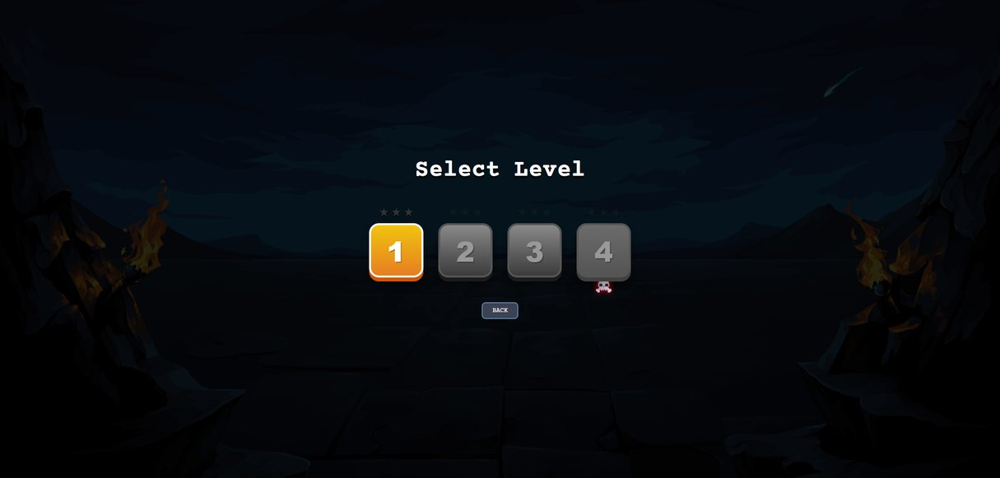
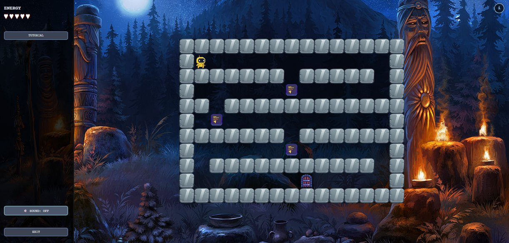
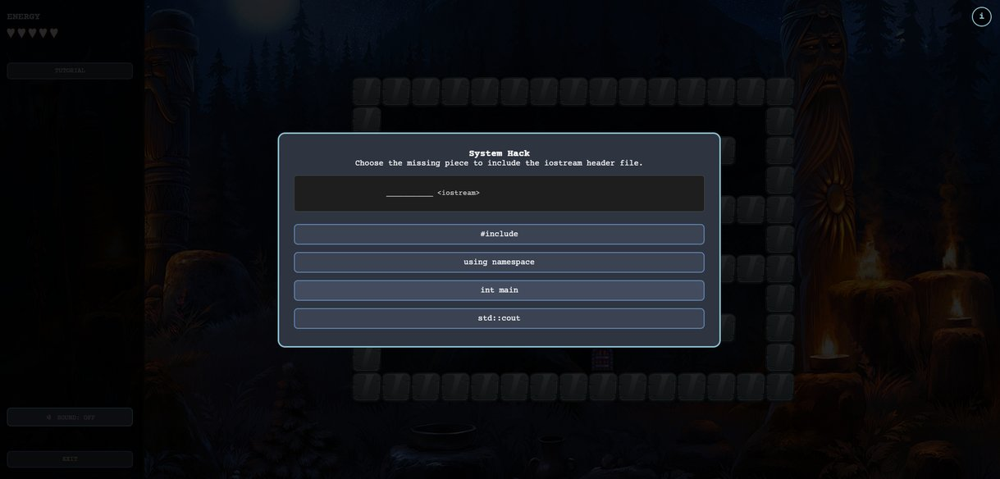
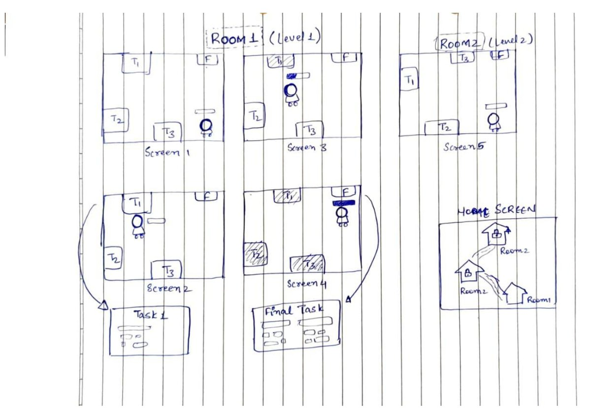
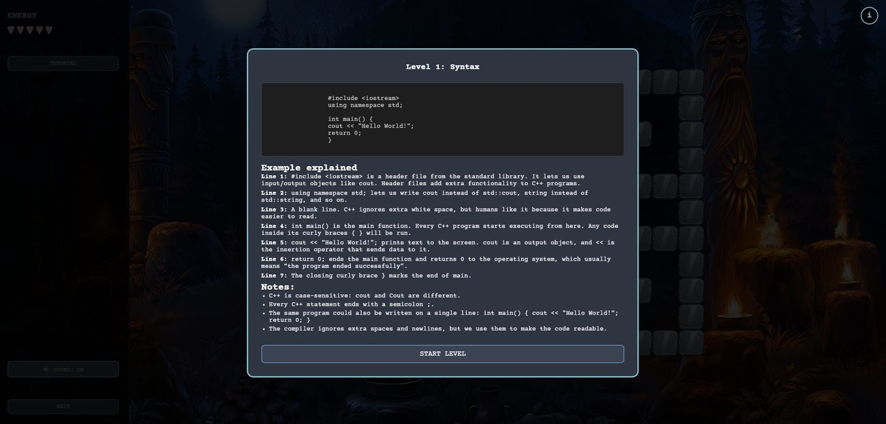
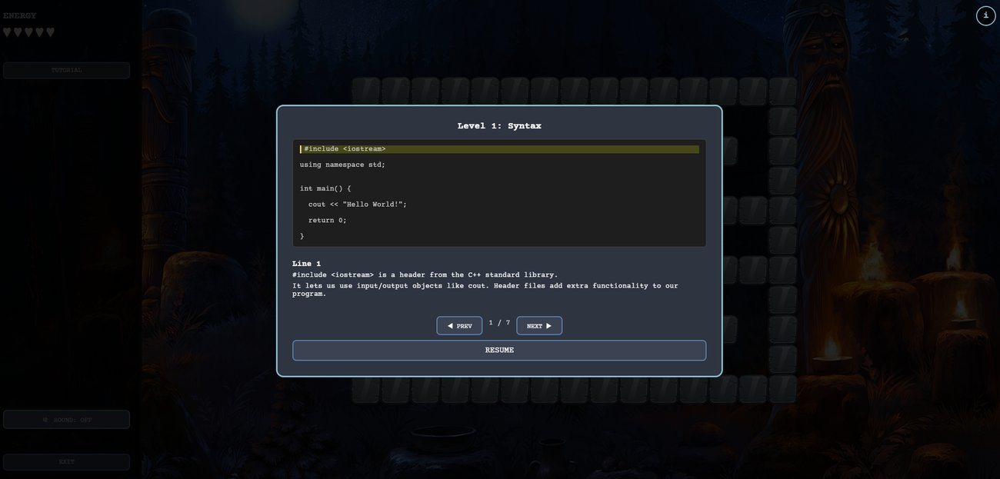
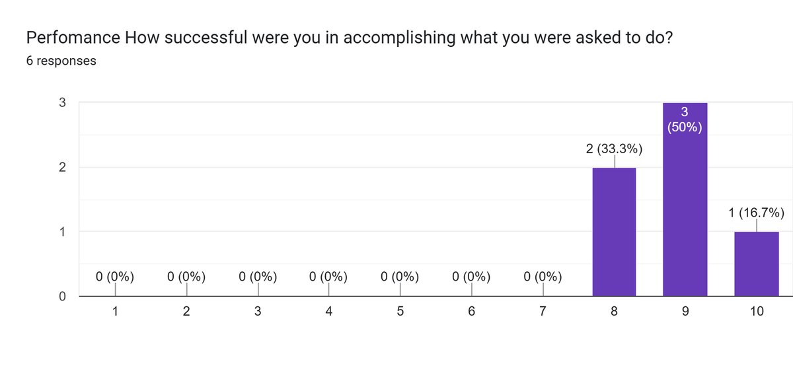

01 · The gap
C++ is usually taught by reading
Beginner C++ mostly means working through text and then a set of exercises. It is passive, and attention drifts. Serious games are a known way to push engagement and time-on-task up in STEM learning, so the goal here was direct: put game mechanics around actual C++ practice, and keep each piece small enough not to overload a beginner.
Can a light maze game with short quiz tasks make early C++ practice feel less like homework, without adding stress?
02 · The concept
A maze, an energy bar, a quiz at each tile
Escape++ is a dungeon-themed maze with grid-based movement. You walk to task tiles, each one poses a C++ question tied to that level's topic (syntax, variables, if-else), and clearing every task unlocks the next dungeon level. An energy bar sits in the corner and drops on a wrong answer, which is enough to create light tension without punishing a learner who is still working it out.
We shaped it through the MDA framework: the mechanics are movement, task pop-ups and the energy system; the dynamics are explore, solve, and gate progression on clearing the level; the aesthetic is curiosity and a small sense of accomplishment as each room opens.


03 · The player journey
Watch, move, solve, unlock
Each level
- Watch the short tutorial for the level's topic
- Move through the maze with the arrow keys
- Reach a task tile and open its question
- Answer: multiple choice, fill in the blank, or true or false
Then
- Correct, and you carry on through the maze
- Wrong, and you retry while the energy bar drops
- Clear every task tile to open the exit
- Unlock the next dungeon level

04 · Paper to build
Storyboarded first
The whole game was drawn on paper before anything was built: two rooms, the screen-by-screen flow through each one, where the task tiles and the final task sit, and a home screen that tracks which rooms are unlocked. It kept the scope honest, one topic per room, a final task that pulls the room's concepts together.

05 · Two tutorials
The same lesson, two ways
The part we actually tested was the tutorial. Cognitive load theory says to keep one idea in front of the learner at a time, so we built two versions of the level-one syntax lesson and compared them.


V1 shows the code, all seven line explanations and a notes block together. V2 highlights one line, explains just that line, and moves through the program step by step with previous and next, then a resume button back to the maze.
06 · The study
Low workload, high perceived success
Six master's students with C++ experience played through Escape++, explored the tutorial and the questions, then filled in a NASA-TLX workload questionnaire plus enjoyment and UI ratings on a 1 to 10 scale.
Mental demand
3.5 / 10
SD 2.43 · low
Frustration
2.67 / 10
SD 2.25 · low
Perceived performance
8.83 / 10
SD 0.75 · high and consistent
For this audience Escape++ read as usable and not stressful: about a minute per level, low mental demand and frustration, and near-unanimous confidence that they had done what was asked. The stepped tutorial and the short quiz tasks worked well together. What the study does not show is learning gain, since everyone already knew C++ and there was no pre or post test.

07 · What is next
A real test with beginners
The obvious next step is the study this one could not be: C++ beginners, randomly split between a plain version with the same slides and questions and the Escape++ game, playing about 15 minutes a day for a week or two, measured with a pre and post C++ test alongside the same workload and enjoyment ratings. The expectation is a larger pre-to-post improvement for the game group at a similar or lower workload.
Beyond that
- More C++ concepts and more levels.
- Adaptive hints: extra explanation when the same answer is missed repeatedly.
- Accessibility and UX: better colour contrast, text-to-speech, conversational feedback.
- A reward layer, points, streaks or badges, for longer-term engagement.